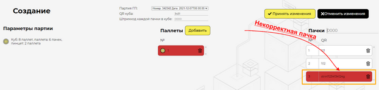

|
При ручном сборе Куба, после заполнения всех полей окна “Новый Куб”, в процессе занесения пачек, которые будут принадлежать Кубу, могут быть обнаружены некорректные пачки. Они будут подсвечены красным цветом. Красная пачка, при сборе Куба означает, что QR-код данной пачки уже занесен в систему.

Перед добавлением пачек в Куб, необходимо заполнить все параметры нового куба.
Порядок работы при обнаружении пачки с дублирующим QR-кодом:
1.Найти некорректный QR-код в заполняемом Кубе. 2.Убрать пачку, к которой принадлежит повторяющийся QR-код. 3.Удалить из списка данную пачку, нажав на кнопку удаления. 4.Физически удалить (оторвать) этикетки с QR-кодом с обеих сброшенных пачек 5.Пачка возвращается на производственную линию перед аппликатором. 6.Вместо удаленной пачки, добавляется корректная.
Если не удалить некорректную пачку из списка при формировании Куба, то как паллета, в которой находится эта пачка, так и Куб, считаются некорректными и будут отмечены в системе красным цветом.
|